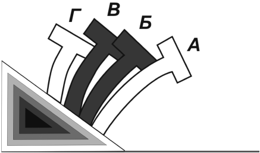

Как начинать движение. Трогание с места на подъеме.
Перед тем, как сесть за руль и запустить двигатель, необходимо совершить следующие действия. Во-первых, проверить исправность автомобиля и его заправку. Во-вторых, проверить, заторможен ли автомобиль стояночным тормозом и находится ли рычаг переключения передач в нейтральном положении. Затем проверьте уровень масла в картере, наличие охлаждающей жидкости в системе охлаждения и топлива в баке; подкачайте рычагом ручной подкачки насоса топливо в поплавковую камеру карбюратора; вытяните до отказа ручку или кнопку воздушной заслонки карбюратора; выключите сцепление и включите зажигание; на несколько секунд включите стартер; после пуска двигателя утопите ручку или кнопку воздушной заслонки на четверть или по ловину ее хода до положения, которое обеспечивает устойчивую работу двигателя на наименьшей частоте вращения коленчатого вала. В течение 2–3 мин прогрейте двигатель; увеличьте частоту вращения коленвала до 1200–1400 об/мин и продолжайте прогревать двигатель, утопив ручку воздушной заслонки до отказа. Проверьте температуру охлаждающей жидкости, которая должна достичь нормы и не превышать ее, давление масла и зарядку аккумуляторной батареи, пристегнитесь ремнями безопасности, проверьте, свободна ли дорога, и начинайте движение.

Рис. 10. Медленное отпускание педали сцепления
Для начала движения переведите рычаг переключения передач из нейтрального положения в положение, соответствующее включению I или II передачи; перенесите правую руку на стояночный тормоз, снимите его с фиксатора и отпустите на треть хода; посмотрите в левое боковое зеркало заднего вида, включите указатель левого поворота; плавно отпустите педаль сцепления, одновременно полностью отпустите стояночный тормоз, нажмите правой ногой на педаль управления подачи топлива; перенесите правую руку на рулевое колесо; плавно начните движение автомобиля, увеличив частоту вращения коленчатого вала путем нажатия на педаль управления подачей топлива на 2/3 ее хода; отъехав от стоянки по плавной кривой, выровните автомобиль и выключите указатель поворота. Чтобы с места тронуться плавно, необходимо немного задержать педаль сцепления в положении, которое обозначено на рисунке 10 буквой В и затем медленно опустить ее на участке БВ с одновременным нажатием на педаль подачи топлива, что постепенно увеличит частоту вращения коленчатого вала. Однако очень медленное нажатие на педаль, а также резкое отпускание ее приводит к нагреванию накладок диска муфты, короблению и выводит их из строя.
Начало движения на ровной сухой дороге осуществляется на низшей передаче с небольшим открытием дроссельной заслонки карбюратора.
Для начинающего водителя самым сложным на подъеме является не само движение, а момент трогания с места. Для трогания с места на подъеме необходимо отпустить педаль сцепления в сочетании с увеличением частоты вращения вала двигателя и одновременным снятием автомобиля со стояночного тормоза. Техника трогания с места на подъеме заключается в следующем: выжать (выключить) педаль сцепления и включить первую передачу; медленно отпустить педаль и одновременно увеличить частоты вращения коленчатого вала (чем круче подъем, тем больше должна быть частота вращения). В момент, когда сцепление должно включиться, что происходит примерно на половине хода педали, следует отпустить стояночный тормоз, больше увеличить нажим на педаль управления дроссельной заслонкой и полностью отпустить педаль сцепления. После выполнения этих действий автомобиль плавно трогается без скатывания назад. Между тем невыполнение любого из условий часто приводит к тому, что двигатель глохнет, автомобиль скатывается назад и может столкнуться со стоящей позади машиной. Потому на подъеме не следует останавливаться ближе 2 м от впереди стоящей машины, так как, трогаясь с места, она может откатиться назад и столкнуться с вашим автомобилем.
Довольно часто для отработки техники трогания на подъеме выбирают подъем где-нибудь в спокойном месте, загоняют туда автомобиль и упражняются, пробуя его удерживать на одном месте, не прибегая к тормозам, пользуясь только педалями газа и сцепления. Как правило, такой тренинг помогает выработать хорошие навыки для начала движения на подъеме. А чтобы вообще избавиться от таких трудностей, следует приобрести автомобиль с автоматической коробкой передач.
Определенные сложности довольно часто возникают у начинающих водителей при управлении автомобилем в зимнее время, особенно при трогании на подъеме по накатанному льду. Для того чтобы решить эту проблему, необходимо положить в багажник немного песка и при вынужденной остановке на обледеневшем склоне поставить автомобиль на ручной тормоз, выйти из машины и посыпать песком лед позади ведущих колес; затем сесть за руль, снять автомобиль с тормоза и откатиться немного назад, чтобы ведущие колеса оказались на песке; тронуться, немного разогнаться и продолжить подъем.
Движение на подъеме порой связано с дорожными заторами – сужение проезжей части при въездах на путепроводы, виадуки, мосты. Чтобы не прерывать путь постоянными остановками, сохраняйте дистанцию в 8–10 м и медленно сокращайте ее, приближаясь на минимальной скорости с включенной первой передачей и выжатым сцеплением. При угрозе остановиться окончательно чуть отпустите сцепление, добавьте обороты, потом снова выжмите его. Когда машина впереди начнет движение, следует увеличить сократившуюся дистанцию. Таким образом можно преодолеть весь подъем без остановок.